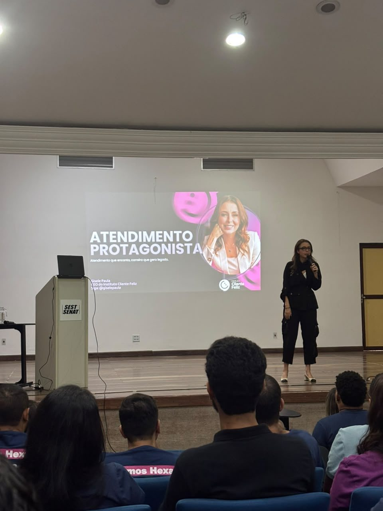
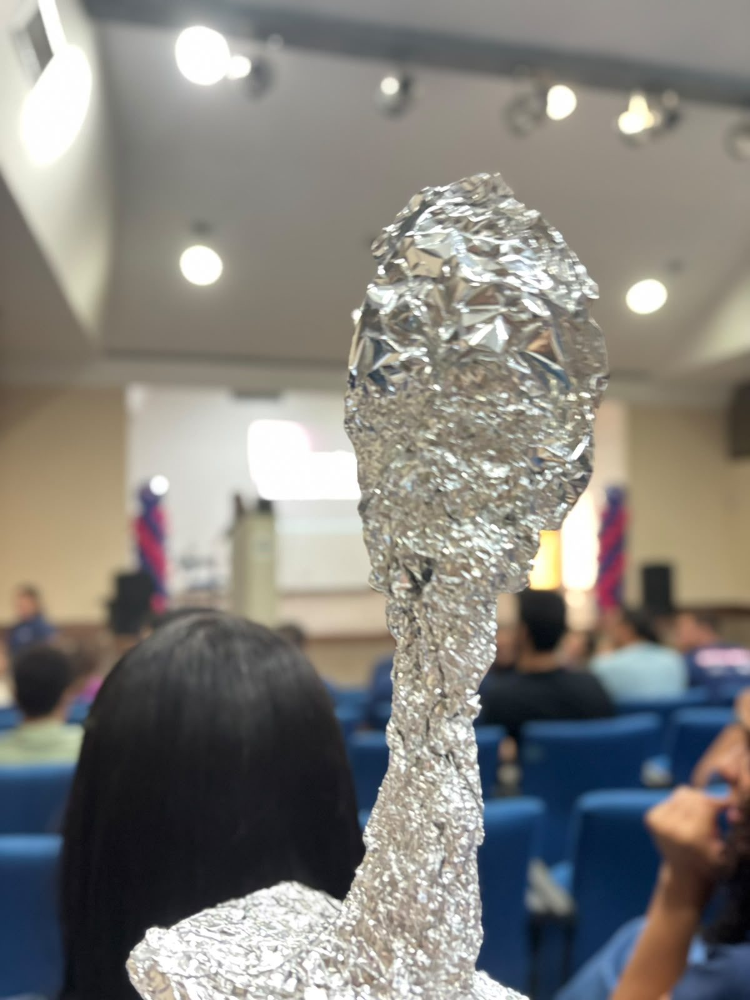
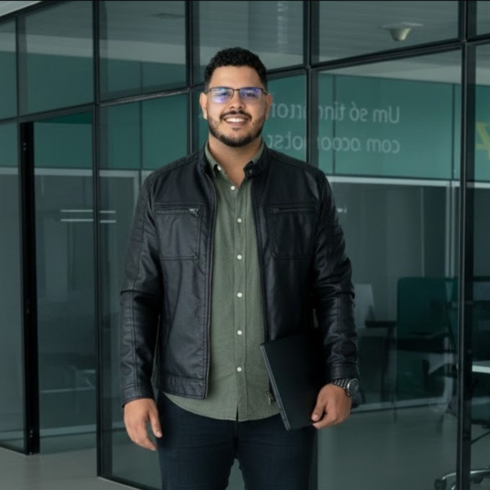

Expertise360: o que o atendimento protagonista ensina à área de Qualidade
Na manhã de 14 de novembro de 2026, participei do Expertise360, a convite da CSH (CNP Seguros Holding). O destaque foi a palestra “Atendimento Protagonista: atendimento que encanta, carreira que gera legado”, de Gisele Paula, CEO do Instituto Cliente Feliz.

A proposta da palestra foi direta: protagonismo no atendimento não depende de cargo, depende de atitude e de método. Saí do auditório com três ideias que conversam diretamente com o trabalho da área de Qualidade.
1. O cliente é a ponta do assunto
Gisele mostrou que, por trás de cada contato, há uma emoção (desprezo, frustração, medo, tristeza) e que, sem solução, a irritação escala até o ressentimento e a fúria. A frase que resume: o cliente é a ponta do assunto, quase nunca o assunto inteiro.
Para quem monitora atendimento, isso é um alerta. Uma avaliação que olha só o script não enxerga o que está por trás do pedido.

2. Excelência pode ser método
O Método do Atendimento 5 Estrelas, apresentado por ela, organiza o bom atendimento em cinco passos: observar, acolher, agir, antecipar e encantar. O que mais me chamou a atenção foi o quarto passo. Antecipar o próximo movimento do cliente é o que evita que ele precise voltar.
3. Os quatro papéis de quem atende
A dinâmica mais marcante separou quatro papéis: o registrador, que abre o protocolo e pede para o cliente “ligar de novo”; o informante, que repassa o prazo do sistema; o resolvedor, que confere o histórico e resolve; e o protagonista, que resolve e evita que o problema aconteça de novo.
A leitura da Qualidade
Essa escada de papéis é, na prática, uma régua de qualidade. Para medir protagonismo, a pergunta mais útil não é se o atendente foi cordial, e sim se o cliente precisou voltar. Isso aponta para indicadores como resolução no primeiro contato (FCR) e recontato, e para uma monitoria que identifica onde a demanda trava.
Também reforça a tese que defendo no QualiCX Brasil: não só de call center vive a experiência do cliente. O protagonista resolve o que está ao seu alcance e leva adiante, com dados, o que nasce em outras áreas. Para aprofundar, veja Não Só de Call Center Vive a Experiência do Cliente e Qualidade não é controle. É alavanca estratégica de resultado.
Troféu dos Protagonistas

Teve também espaço para a prática: na dinâmica dos Protagonistas, nossa equipe levou o troféu, feito na hora com papel alumínio e recebido com muito orgulho.
Agradeço à Gisele Paula pela palestra e à CSH pelo convite, pela organização e pela lembrança entregue aos participantes.
